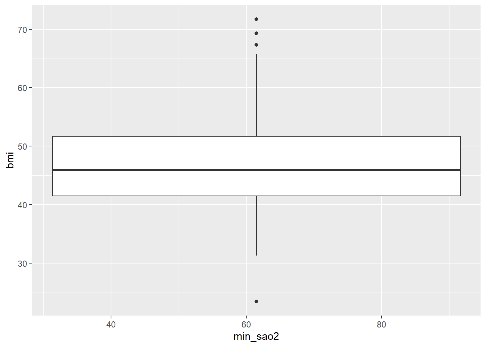
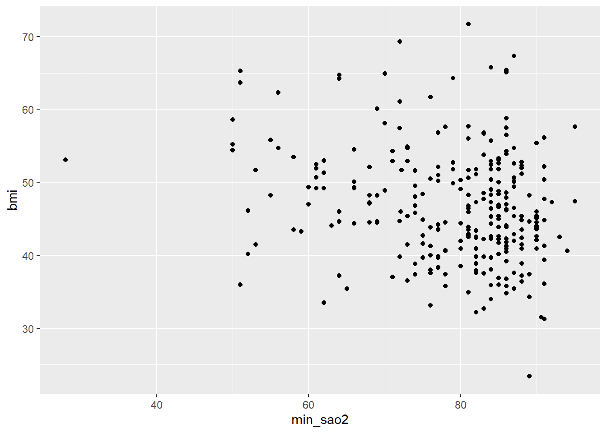

rm(list = ls(all.names = TRUE)) # limpa todos os objetos, incluindo os ocultoExercise_2
set.seed(123)
library(janitor)
library(tidyverse)
library(readxl)
library(lubridate)
library(data.table)
library(here)
library(haven)
hypoxia <- read_excel("data/hypoxia.xlsx")
View(hypoxia)
hypoxia <- clean_names(hypoxia) # este é muito importante para limpar maiusculas e assim...
data <- hypoxia %>%
select(
iv_morphine_eq,
age,
female,
bmi,
smoking,
propofol_induction,
crystalloids,
colloids,
min_sao2
)
view(data)data <- data %>%
filter(
age>25
)data_1 <- data %>%
mutate(
sum = crystalloids+ colloids
)summarise <- data_1 %>%
group_by(female) %>%
summarise(
mean=mean(bmi),
sd =sd(bmi)
)summarize_2 = data_1 %>%
group_by (smoking) %>%
summarise(
mean=mean(propofol_induction),
sd=sd(propofol_induction))municipio = read_excel("data/municípios.xlsx")
#ou municipio = read_excel(here("data","municípios.xlsx")
municipio <- clean_names(municipio)municip = municipio %>%
rename(
municipality=municipio
)agg = left_join(
hypoxia,
municip,
by = "municipality"
) %>%
group_by(nuts_2,female) %>%
summarise(
count= n()
)p <- ggplot(data= data,
aes(x = min_sao2, y = bmi)) +
geom_boxplot()
p
p <- ggplot(data= data,
aes(x = min_sao2, y = bmi)) +
geom_point()
p
data_plot <- hypoxia %>%
mutate(
diabetes=factor(diabetes, labels=c("Sem diabetes", "Com diabetes"))
)
view (data_plot)